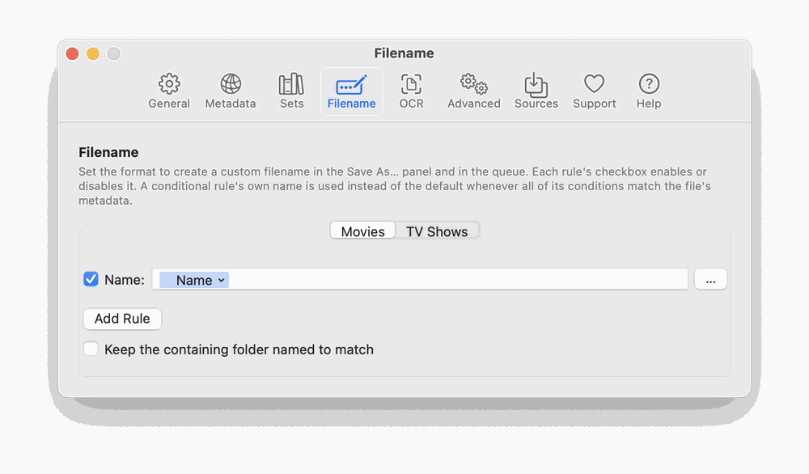

Naming rules decide the output file name. There is a rule list for Movies and one for TV Shows. Each rule is a template built from tokens (title, studio, year and so on) with optional conditions (If / And / Or a field has a value). The first matching rule wins; the Default rule is used when none matches. A rule can be switched off with its checkbox. Two extra options live here:

Show/Season NN folders for TV episodes.A movie with no title tagged is never renamed, whatever the rules say.